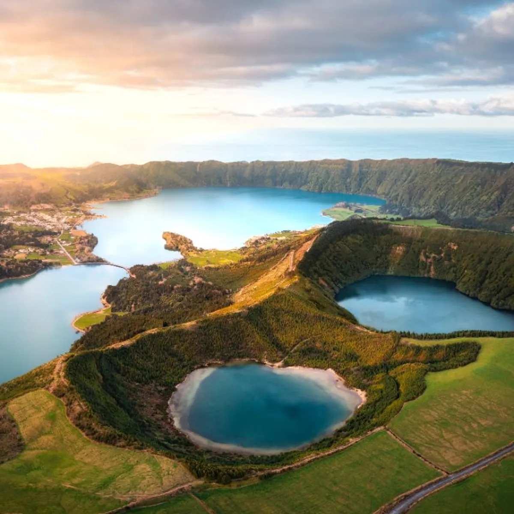
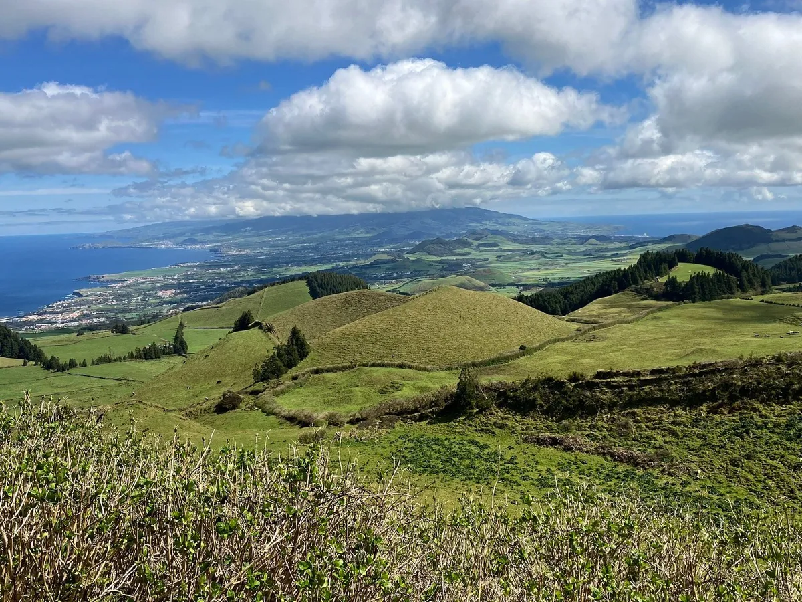
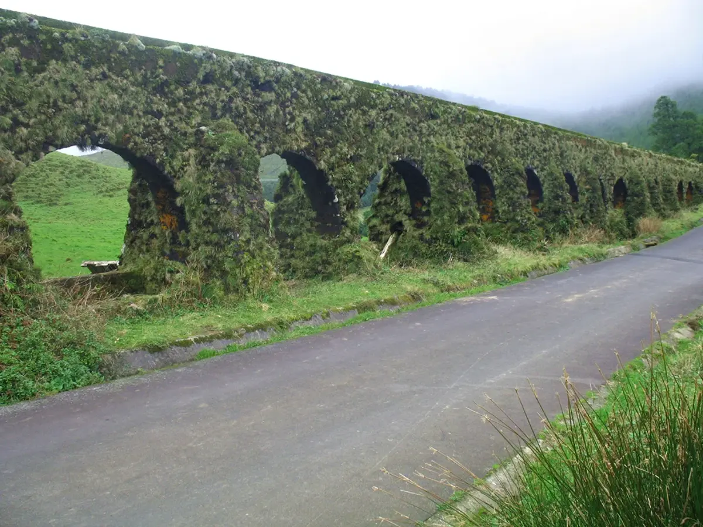
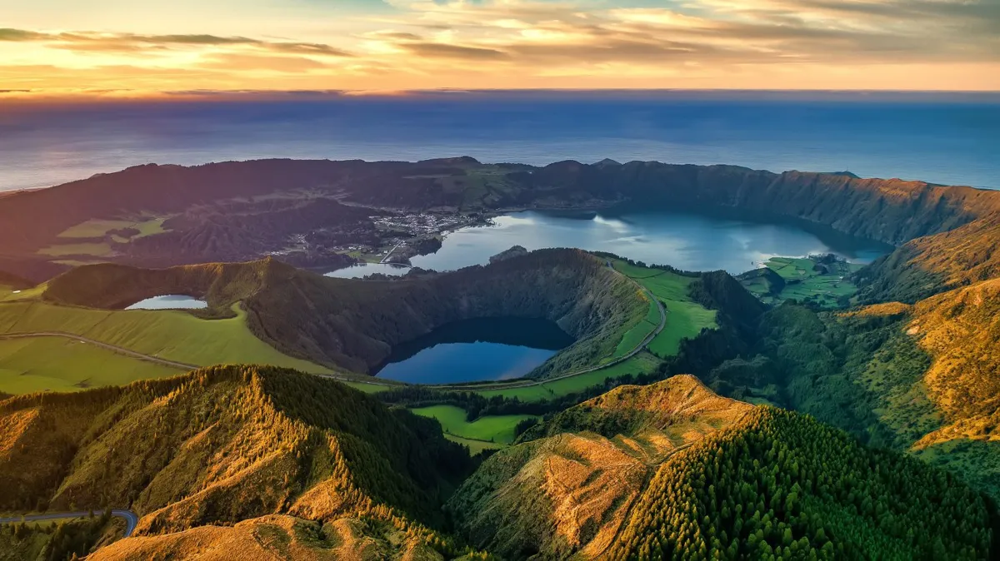
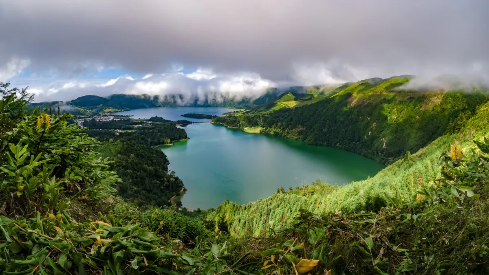
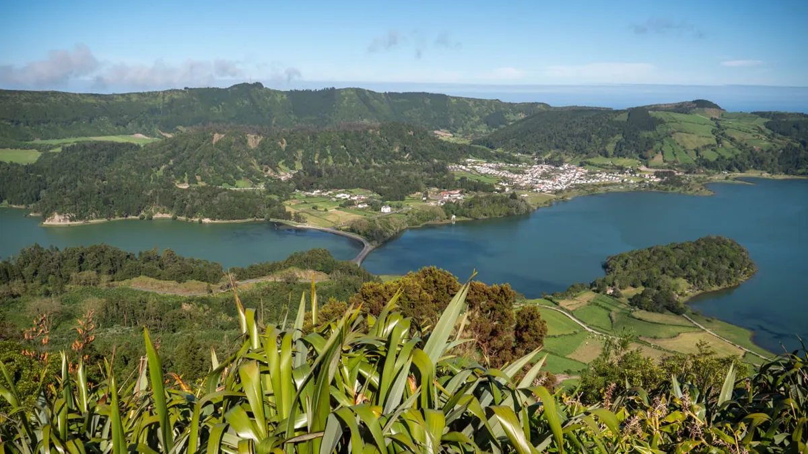
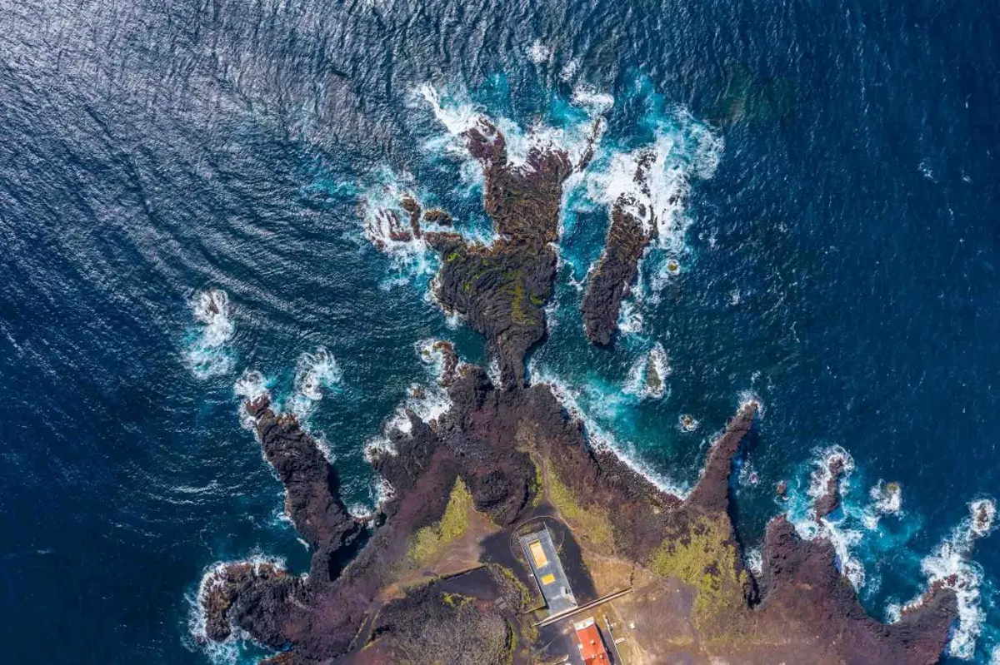
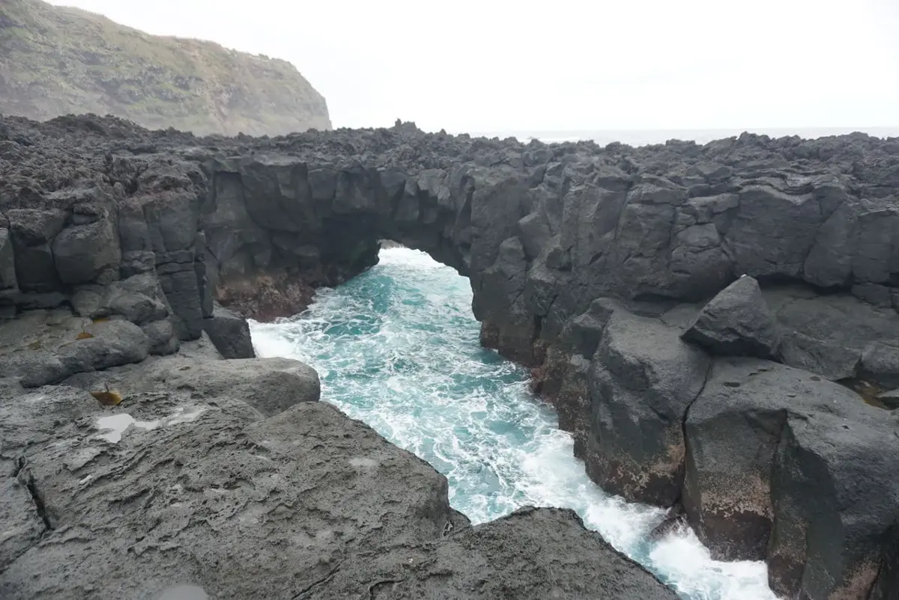
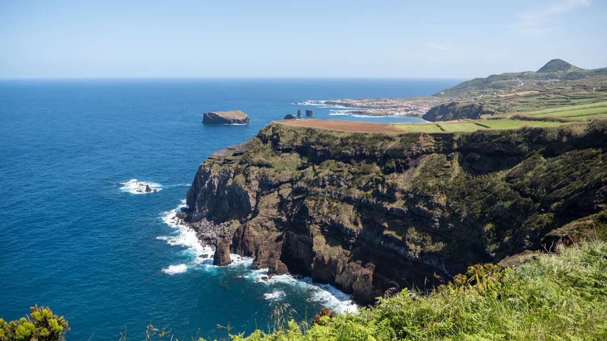
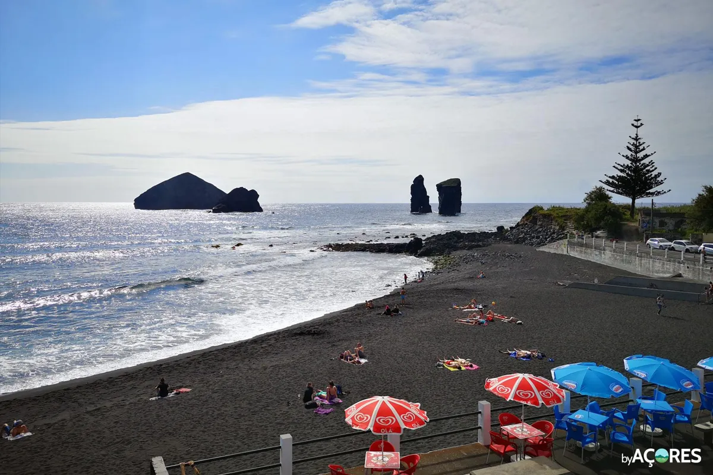

🌋 Oest de São Miguel
Sete Cidades · Mosteiros · Ponta da Ferraria
En aquesta zona hi ha diverses opcions de senderisme. En l'itinerari proposat s'ha considerat fer una versió modificada del PRC05.
Si es decideix fer-ne alguna altra, cal ser conscients del que pot comportar: renunciar a fer activitats a l'interior del cràter, no visitar alguns miradors i/o prescindir d'alguna de les visites posteriors previstes.
Hora aproximada de sortida de l'allotjament: 8h
Com que a l'allotjament no tindrem res per menjar i probablement el dia abans no haurem sopat, abans d'agafar els cotxes i posar-nos en marxa, el primer que farem és anar a esmorzar per algun lloc dels voltants.
Abans de les 9h, agafarem els cotxes i posarem rumb cap a Sete Cidades. Visitarem en primer lloc un mirador dels molts que ens esperen durant els propers dies. Es tracta del mirador de Pico do Carvão (14 km; 25 min), que ens ha de permetre observar el llac del mateix nom.
Seguidament, pararem dos quilòmetres i mig més enllà al pàrquing de Mata do Canário per visitar el Muro das Nove Janelas.


Des d'aquí tindrem l'oportunitat de fer el PRC05 lleugerament escurçat i optimitzat (8,1 km; 3:00h). Si no el fem, seguirem menys d'un quilòmetre més amb cotxe fins a arribar al pàrquing de la Lagoa do Canário, des d'on iniciarem una petita caminada (2,6 km d'anada i tornada) fins a l'arxiconegut mirador Boca do Inferno (o també anomenat Grota do Inferno), que ens oferirà una vista increïble sobre l'interior del cràter amb el poble i els dos llacs de color blau i verd (depèn de la llum s'apreciarà més o menys la diferència de colors).
Després agafarem de nou els cotxes per arribar-nos a un altre mirador icònic, el de Vista do Rei (4,5 km des de Mata do Canário o 3,7 km des de Lagoa do Canário), des d'on obtindrem una altra perspectiva de la zona igualment preciosa.


Seguidament agafarem de nou els cotxes per endinsar-nos a l'interior del cràter fins a arribar al poble de Sete Cidades (9 km; 15 min), passant durant el trajecte pels miradors de Cerrado das Freiras i de Lagoa de Santiago.


Un cop al poble, en funció de l'hora que sigui, abans o després de dinar, podem fer una passejada curta per la riba dels dos llacs (mirarem si hi ha la possibilitat de fer-ho amb bicicletes de lloguer) i les més aventureres també tindran l'oportunitat de fer paddle surf o kayak per la Lagoa Azul.
L'oferta gastronòmica de Sete Cidades és força limitada, però esperem trobar un lloc per dinar alguna cosa, encara que sigui un entrepà. Aquests són els cinc restaurants que hi ha al poble.
Per la tarda, ens dirigirem cap a l'oest de l'illa per visitar la impressionant zona de Ponta da Ferraria (10 km; 20 min). Començarem amb el mirador panoràmic de Ihla Sabrina (amb possible pujada al Pico das Camarinhas — 1,3 km) per després baixar fins al pàrquing que hi ha tocar de la costa i des d'on visitarem l'impressionant arc de roca natural Porta do Diabo i la piscina natural d'aigües termals de Ponta da Ferraria, on si ens ve de gust podrem fer un bany (banyador vell o fosc) mentre sentim l'escalfor d'origen volcànic dins el mateix oceà Atlàntic (per notar l'escalfor, hi ha d'haver marea baixa o mitja).


Des d'aquí posarem rumb cap al nord resseguint la costa oest de l'illa fins al proper mirador de Ponta do Escalvado (5 km; 10 min), on gaudirem de precioses vistes a la costa i els seus penya-segats, i seguirem direcció nord fins al bonic poble pesquer de Mosteiros (4,3 km; 12 min), a on podrem gaudir d'un refrescant bany a la seva espectacular platja o la piscina natural Caneiros i admirar els illots que caracteritzen la costa d'aquest poble des del mirador Ponta do Castelo.


A continuació resseguirem la costa nord fins al mirador das Pedras Negras, situat al poble de Capelas (25 km; 40 min). Durant aquest tram de ruta, passarem per diversos miradors com Mar de Cima, dos Melos, do Pico Vermelho, de Remédios i de Santo António, on ja veurem si fem alguna aturada breu per contemplar les vistes.
Finalment enfilarem cap al sud per la carretera EN4-1A fins a arribar de nou al nostre allotjament a Ponta Delgada (12,5 km; 20 min). Al vespre buscarem lloc per sopar a algun dels molts restaurants de la capital. Aquí una petita selecció.
En cas que Sete Cidades estigui tapat per la boira o núvols baixos de bon matí, deixarem la zona dels miradors per a la tarda (amb l'esperança que s'hagi obert el cel) i farem primer la part de costa, en sentit antihorari.